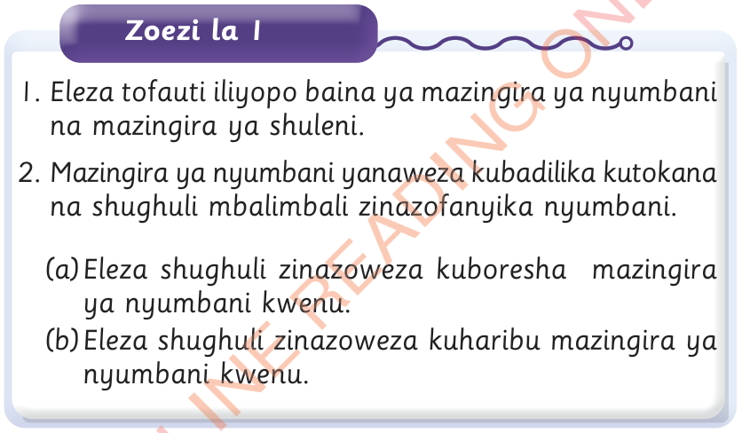

Zoezi la 1

1. Eleza tofauti iliyopo baina ya mazingira ya nyumbani na mazingira ya shuleni.
2. Mazingira ya nyumbani yanaweza kubadilika kutokana na shughuli mbalimbali zinazofanyika nyumbani.
(a) Eleza shughuli zinazoweza kuboresha mazingira ya nyumbani kwenu.
(b) Eleza shughuli zinazoweza kuharibu mazingira ya nyumbani kwenu.